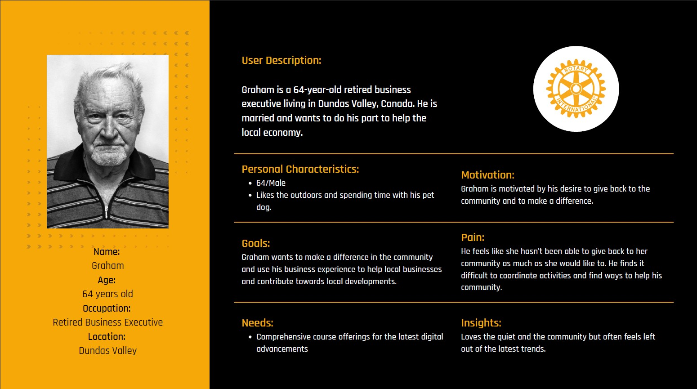
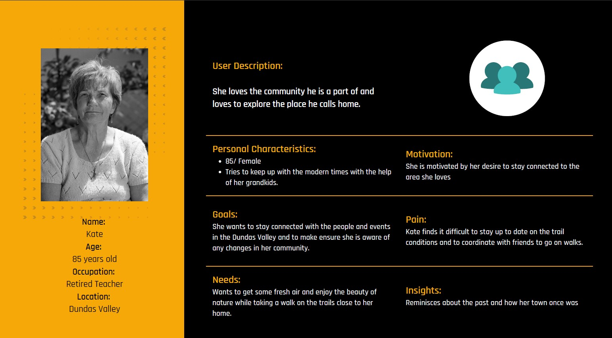
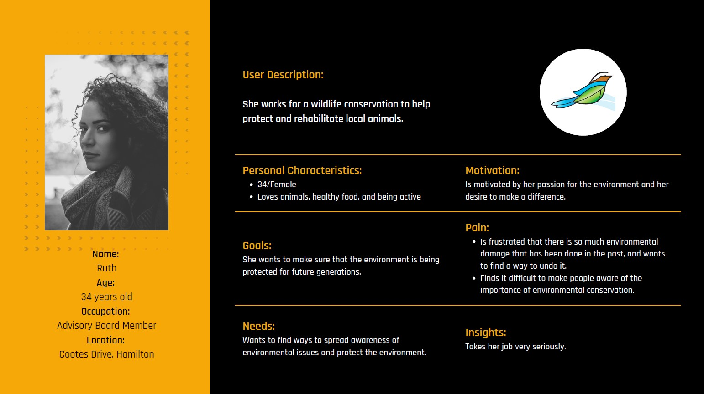

Project Start: Jan, 2023

The Spencer Creek Historical Trail (SCHT) is a 2.5 km trail that stretches from the
Ogilvie Street bridge and across Spencer Creek to the Mill Street bridge located in the
heart of Dundas, Hamilton, Ontario.
The trail is rated moderate to difficult, with several steep sections and
rocky terrain. Hikers are advised to bring adequate water and wear sturdy footwear. The
trail includes a creek and offers a unique wilderness experience for outdoor enthusiasts.
This project focuses on leveraging digital technologies to improve the user experience on trails. With the increasing popularity of outdoor recreational activities, the project evaluates the benefits and limitations of integrating digital technologies into trail design. Extensive research is conducted to explore how technologies such as mobile navigation apps, augmented reality experiences, and smart sensors can enhance safety, engage and educate users, and promote sustainable trail practices. The project also emphasizes the importance of involving potential users in the design process to ensure accessibility and meet their needs. Pilot tests and feedback collection are recommended to continually improve and refine the digital trail enhancements.
We have designed a set of personas based on the valuable insights and needs of our stakeholders and users. These personas represent key individuals within our target audience, embodying their unique characteristics and goals.

By creating these personas, we gain a better understanding of our stakeholders' and users' motivations, behaviors, and pain points, enabling us to tailor our products and services to meet their specific needs. These personas serve as relatable archetypes, allowing us to empathize and connect with our audience on a deeper level. They help us develop more meaningful and effective solutions by putting ourselves in their shoes.

Through extensive research and feedback, we have carefully delineated the personas that encapsulate the various profiles, roles, and preferences within our stakeholder and user community.

By referring to these personas, we can align our strategies and decisions with the specific requirements of our target audience, ensuring that our efforts are relevant and impactful. These personas serve as valuable guides in informing product development, marketing strategies, and overall user experience design, ultimately fostering stronger engagement, satisfaction, and long-term relationships with our stakeholders and users.
HOW MIGHT WE
create an innovative and an immersive trail experiences that can engage and educate users and promote safety and sustainability promoting sustainability.
However, there are limitations to overcome, but we can create dynamic and interesting trail experiences that suit the needs of a diverse spectrum of users while also safeguarding and maintaining natural resources.